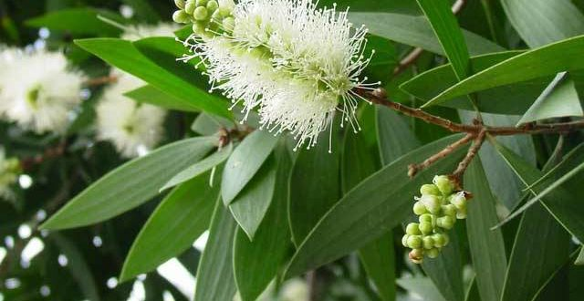
Kayu PutihKayu Putih
Pengenalan : Kayu putih adalah tanaman pohon menahun dari suku jambu-jambuan (Myrtaceae) yang daunnya populer diolah menjadi minyak gosok tradisional.
Ciri-ciri : Kulit batang berwarna putih keabu-abuan berlapis gabus yang mudah mengelupas, serta memiliki daun berbentuk lanset yang beraroma khas saat diremas.
Fungsi : Melegakan pernapasan, menghangatkan tubuh, dan mengurangi nyeri otot.
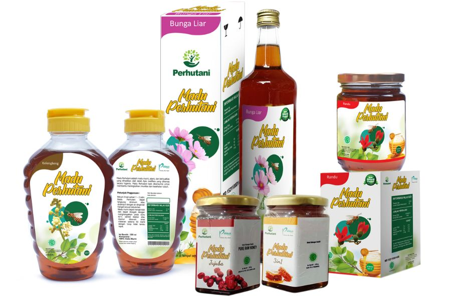
MaduMadu Kualitas Terbaik
Pengenalan : Madu adalah cairan kental alami berwarna kuning keemasan hingga cokelat.
Ciri-ciri : Cairan ini berwarna kuning keemasan hingga cokelat gelap, bertekstur kental dan lengket, beraroma khas flora, serta tidak mudah membusuk karena kadar airnya yang sangat rendah.
Fungsi : Meningkatkan imun dan stamina serta meredakan batuk, mencegah penuaan dini, serta menjadi sumber energi instan dan pengganti gula pasir yang sehat.
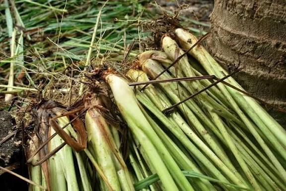
Serai WangiSerai Wangi
Pengenalan : Serai wangi adalah tanaman rumput-rumputan menahun yang menghasilkan minyak atsiri (sitronela) beraroma lemon tajam.
Ciri-ciri : Tanaman ini tumbuh membentuk rumpun lebat, memiliki daun pipih panjang berwarna hijau muda dengan tepi kasar, serta mengeluarkan aroma wangi yang kuat saat daunnya diremas.
Fungsi : Memberikan efek tenang, meredakan flu, dan mengurangi kembung, minyak pijat pereda nyeri sendi, aromaterapi penenang stres.
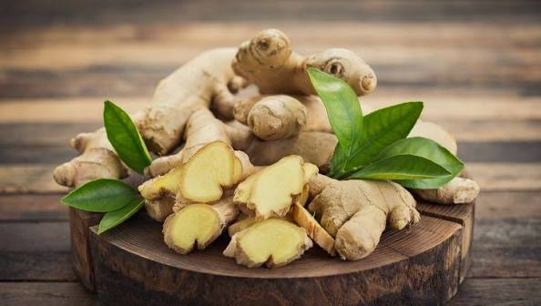
JaheJahe
Pengenalan : Jahe adalah tanaman rimpang populer yang digunakan sebagai bumbu dapur, bahan minuman hangat, dan tanaman obat tradisional.
Ciri-ciri : Tanaman ini memiliki rimpang berbuku-buku di dalam tanah dengan aroma pedas khas, batang semu setinggi 30–100 cm, dan daun menyirip panjang.
Manfaat: Menghangatkan badan, meredakan mual, nyeri otot, meringankan radang sendi, meredakan batuk/pilek, serta meningkatkan sistem kekebalan tubuh.
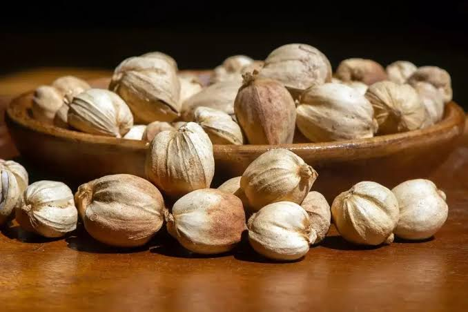
KapulagaKapulaga
Pengenalan : Kapulaga adalah tanaman rempah berbentuk rimpang dari keluarga jahe-jahean (Zingiberaceae) yang menjadi salah satu rempah termahal di dunia.
Ciri-ciri : Tanaman ini tumbuh berumpun mirip lengkuas, memiliki buah berbentuk bulat telur berongga yang berkerumun di pangkal batang, dan bijinya berwarna hitam kecil dengan aroma wangi yang sangat kuat.
Fungsi : Membantu menurunkan tekanan darah & melancarkan pencernaan.
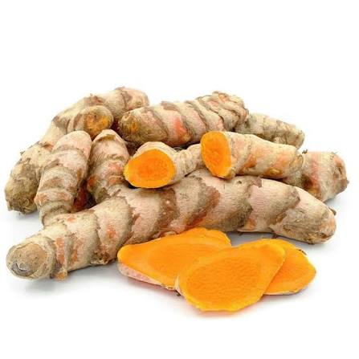
KunyitKunyit
Pengenalan : Kunyit adalah tanaman rempah dan obat asli Asia Tenggara dari suku jahe-jahean (Zingiberaceae) yang sering digunakan sebagai bumbu masakan, pewarna alami, dan jamu tradisional.
Ciri-ciri :Memiliki rimpang akar bagian dalam berwarna kuning oranye cerah, tekstur kulit luar bersisik cokelat muda, serta berdaun lebar lonjong berwarna hijau tua.
Manfaat: Antiradang dan meningkatkan daya tahan tubuh, dan menjaga kesehatan pencernaan.
Mengapa Memilih Herbal Perhutani?
Alami & Aman
Tanpa bahan kimia berbahaya, aman untuk dikonsumsi.
Riset & Inovasi
Dikembangkan melalui riset untuk manfaat optimal.
Dukungan Lokal
Memberdayakan masyarakat sekitar hutan.
Untuk Generasi Sehat
Mendukung gaya hidup sehat secara alami.
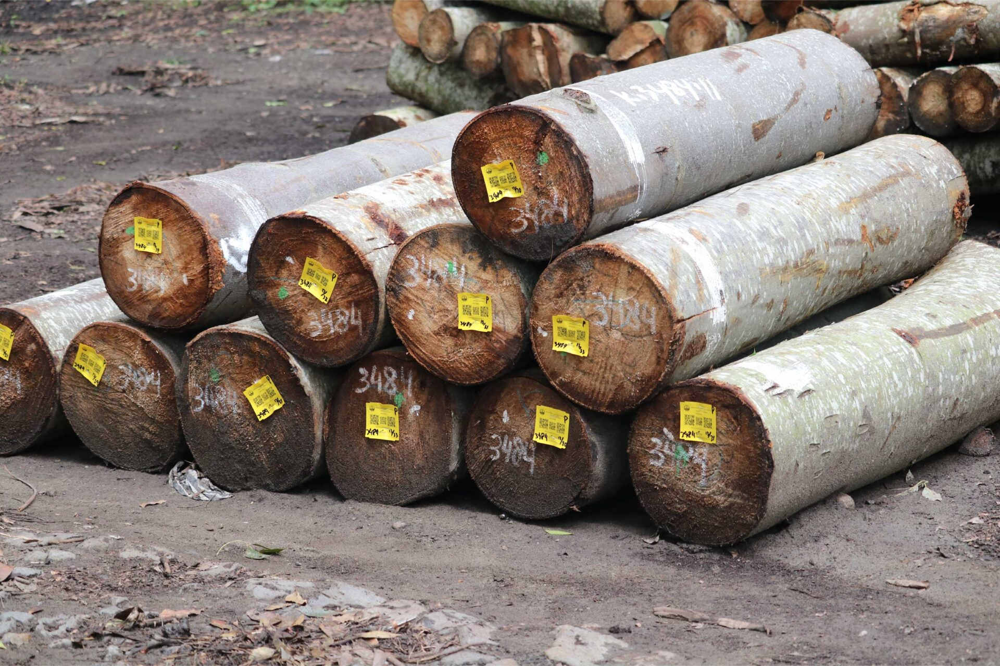
Kayu BalsaKayu Balsa
Pengenalan : Kayu balsa adalah kayu komersial produksi Perum Perhutani dari jenis pohon yang tumbuh sangat cepat.
Ciri-ciri : Bobotnya sangat ringan, berwarna putih cerah/keemasan, sangat mudah dipotong.
Fungsi : Bahan maket, aeromodelling, papan selancar, serta material inti kapal.
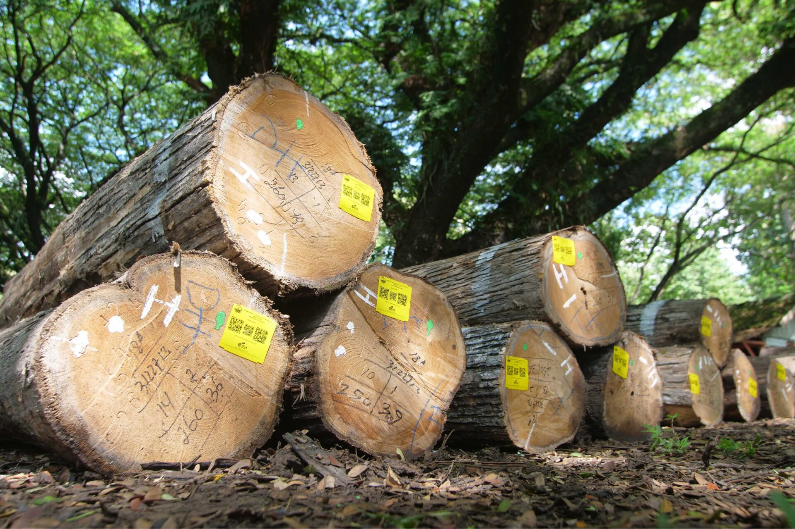
Kayu JatiKayu Jati
Pengenalan : Kayu jati adalah kayu kualitas premium Perhutani dengan usia tebang tua (40-80 tahun).
Ciri-ciri : Serat padat, cokelat keemasan, mengandung minyak alami penangkal rayap.
Fungsi : Bahan utama furnitur mewah, konstruksi bangunan, dan lantai kayu.
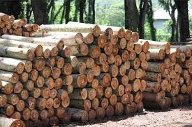
Kayu MahoniKayu Mahoni
Pengenalan : Kayu mahoni adalah kayu alternatif premium pengganti jati yang lebih ekonomis.
Ciri-ciri : Warna merah muda ke kecokelatan, serat lurus, dan stabil.
Fungsi : Ideal untuk bahan furnitur dengan finishing cat duco putih atau cerah.
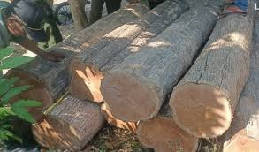
Kayu MerbauKayu Merbau
Pengenalan : Kayu Merbau adalah kayu keras berkualitas tinggi (dijuluki kayu besi).
Ciri-ciri : Teras cokelat kemerahan hingga hampir hitam, sangat keras.
Fungsi : Konstruksi luar ruangan (decking), parket lantai, dan kusen.
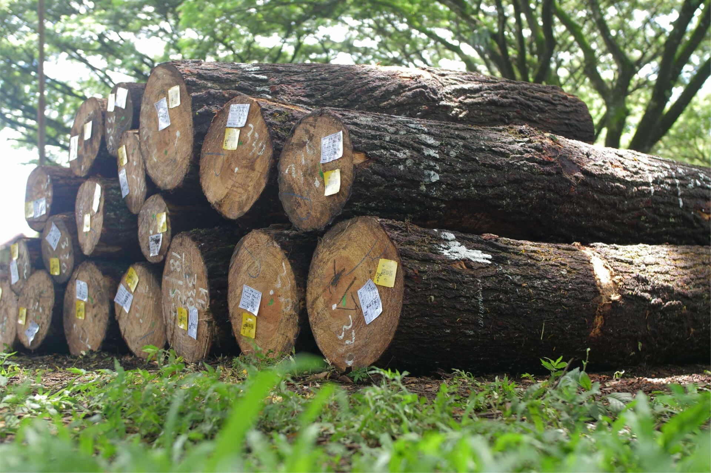
Kayu PinusKayu Pinus
Pengenalan : Kayu pinus adalah kayu konifer yang dikelola luas oleh Perhutani.
Ciri-ciri : Krem cerah, ringan, bertekstur lunak, estetik dengan mata kayu.
Fungsi : Furnitur interior minimalis/skandinavia, kerajinan, dan palet logistik.
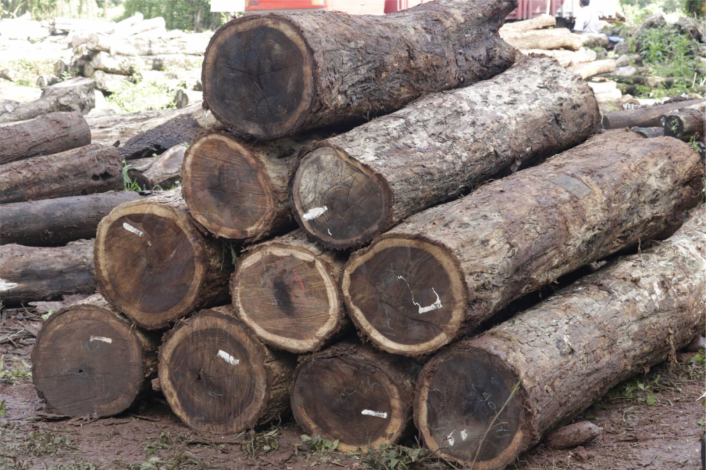
Kayu SonokelingKayu Sonokeling
Pengenalan : Kayu sonokeling adalah kayu keras mewah asli Indonesia (Java Palisander).
Ciri-ciri : Warna gelap eksotis, sangat keras, berat, dan tahan rayap.
Fungsi : Furnitur kelas atas, lantai premium, dan instrumen musik.
Mengapa Memilih Produk Kayu Perhutani?
Legalitas Terjamin
Dilengkapi sertifikasi resmi pengelolaan hutan lestari (SVLK).
Kualitas Premium
Berasal dari pohon pilihan dengan usia tebang matang.
Eco-Friendly
Sistem tebang-tanam kembali untuk kelestarian alam.
Terpercaya
Menjadi mitra utama industri perkayuan nasional dan global.
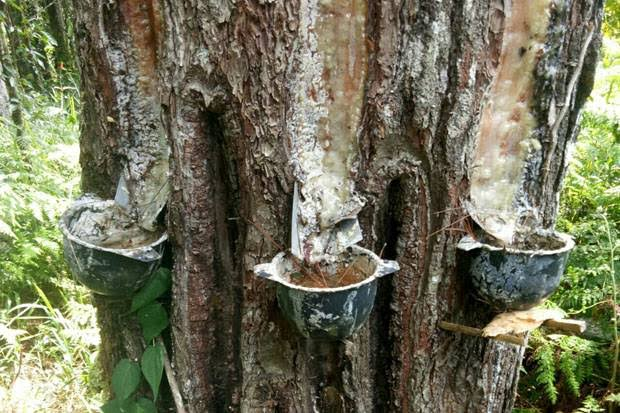
Getah PinusGetah Pinus
Pengenalan : Getah pinus adalah cairan lengket berwarna putih keruh hingga kekuningan yang keluar dari batang pohon pinus ketika kulitnya disayat atau dilukai.
Ciri-ciri : Cairan alami dari pohon pinus yang berwarna putih keruh hingga kekuningan, bertekstur sangat lengket dan kental, beraroma khas pinus yang tajam, serta tidak larut dalam air.
Fungsi : Sebagai pelindung alami untuk menutup luka pada batang serta menghalau serangan hama dan infeksi jamur.
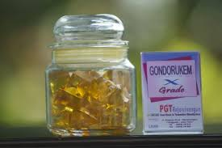
GondorukemGondorukem
Pengenalan : Gondorukem adalah Residu padat alami hasil penyulingan getah pohon pinus (Pinus merkusii) komoditas ekspor Perum Perhutani.
Ciri-ciri : Bongkahan padat rapuh seperti kristal, kuning keemasan, dan tidak larut dalam air.
Fungsi : Sebagai bahan baku alami untuk memberikan daya rekat, efek kilap, pelapis tahan air, dan sifat anti-licin pada berbagai produk industri seperti lem, cat, tinta, sabun, timah solder, hingga alat musik biola.
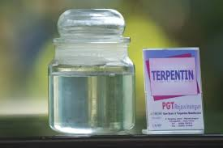
TerpentinTerpentin
Pengenalan : Terpentin adalah cairan murni beraroma tajam hasil sulingan getah pinus yang berfungsi sebagai pelarut organik alami dan bahan baku wewangian.
Ciri-ciri : Cairan encer yang jernih tak berwarna, tidak larut dalam air, mudah menguap terbakar, serta memiliki aroma pinus yang tajam dan menyengat.
Fungsi : Sebagai pelarut alami untuk mengencerkan cat dan membersihkan kuas, bahan dasar pewangi karbol lantai, serta campuran balsem dan kosmetik.
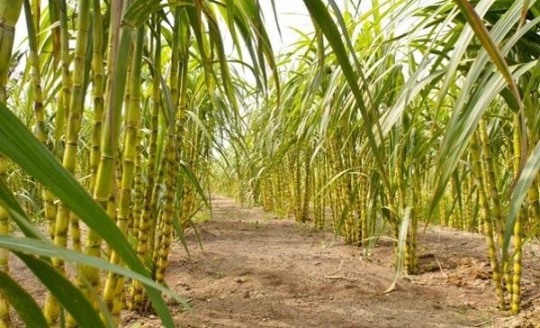
TebuTebu
Pengenalan : Tebu adalah tanaman rumput penghasil gula pasir yang dibudidayakan di kawasan hutan melalui program Agroforestry Tebu Mandiri (ATM) Perum Perhutani.
Ciri-ciri : Tanaman ini berakar serabut dengan batang beruas setinggi 2–5 meter yang menyimpan cairan manis dan memiliki daun berbentuk pita tajam.
Fungsi : Komoditas ini berfungsi mengoptimalkan lahan kosong hutan untuk pendapatan cepat, mendukung swasembada gula, dan memberdayakan masyarakat tanpa merusak pohon utama.
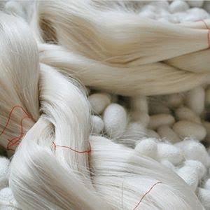
Sutra AlamBenang Sutra Alam
Pengenalan : Benang sutra adalah serat protein alami kontinu yang dihasilkan dari kepompong ulat sutra (terutama Bombyx mori) melalui proses pemintalan.
Ciri-ciri : Serat ini memiliki kilau alami seperti mutiara, bertekstur sangat halus dan lembut, berkekuatan tinggi namun elastis, serta nyaman dipakai karena adem di cuaca panas dan hangat di cuaca dingin.
Keunggulan : Bahan baku tekstil premium ini berfungsi sebagai material utama pakaian mewah (seperti gaun, kemeja, dan dasi), benang bedah medis, hingga komponen kosmetik.
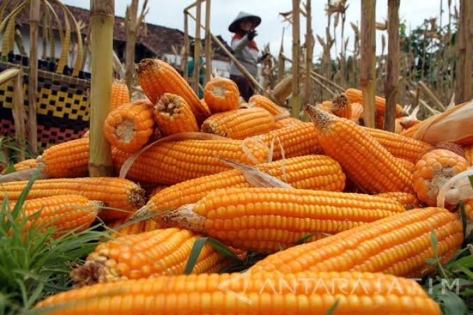
JagungJagung
Pengenalan : Jagung adalah tanaman pangan semusim dari famili rumput-rumputan (Poaceae) yang menjadi salah satu sumber karbohidrat utama dunia selain padi dan gandum.
Ciri-ciri : Tanaman ini memiliki batang tunggal beruas, berakar serabut, berdaun pita memanjang sejajar, serta menghasilkan tongkol berbiji rapat yang terbungkus kelobot (kropak).
Keunggulan : Jagung berfungsi sebagai bahan makanan pokok manusia, bahan baku utama pakan ternak (unggas), serta sumber bahan baku industri seperti pati, sirup fruktosa, etanol, dan minyak nabati.
Mengapa Memilih Produk Non Kayu Perhutani?
Potensi Lestari
Memanfaatkan hasil hutan tanpa harus menebang pohon.
Standar Industri
Memenuhi spesifikasi mutu untuk kebutuhan industri global.
Pemberdayaan Warga
Melibatkan pesanggem dan masyarakat sekitar hutan.
Kualitas Teruji
Diproses dengan pengawasan ketat dan higienis.
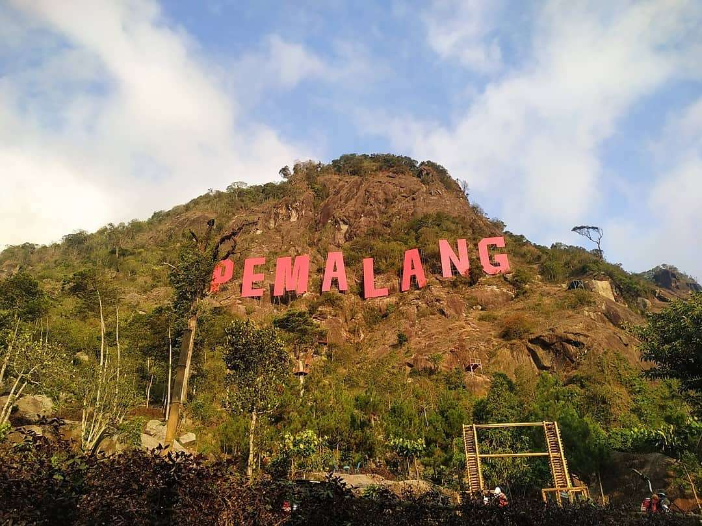
PegununganBukit Mendelem (Gunung Jimat)
Lokasi : Desa Mendelem, Kecamatan Belik, Kabupaten Pemalang, Jawa Tengah (Kawasan Hutan Perhutani KPH Pemalang).
Ciri Khas : Dikenal masyarakat sebagai "Gunung Jimat" karena kental dengan situs sejarah cagar budaya, serta memiliki landmark ikonik berupa tulisan raksasa "PEMALANG" di lereng bukit batunya.
Keunggulan : Menawarkan panorama alam indah berlatar Gunung Slamet, serta terkenal dengan wahana ekstrim Via Ferrata (pemanjatan tebing vertikal menggunakan tangga besi) di area bawah menyediakan flying fox.
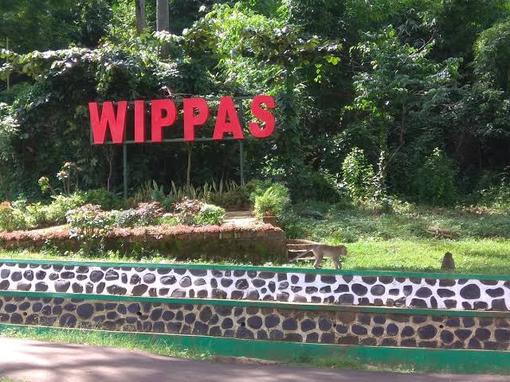
Wippas SurajayaWippas Surajaya
Lokasi : Desa Surajaya, Kecamatan Pemalang, Kabupaten Pemalang (Wilayah hutan Perhutani KPH Pemalang).
Ciri Khas : Mengusung perpaduan konsep Wanawisata (wisata alam) hutan jati yang asri, habitat bagi ratusan kera liar yang jinak, serta keberadaan Situs Makam Pangeran Purbaya sebagai cagar budaya religi.
Keunggulan : Destinasi wisata keluarga yang teduh dan edukatif, memiliki fasilitas embung (telaga buatan) dan kolam renang, serta memiliki akses yang dekat dari pusat Kota Pemalang.
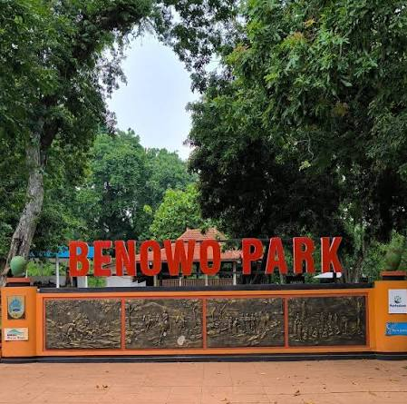
Benowo ParkBenowo Park
Lokasi : Desa Penggarit, Kecamatan Pemalang, Kabupaten Pemalang (Kawasan Hutan Jati Perhutani KPH Pemalang).
Ciri Khas : Perpaduan wisata alam hutan jati yang rindang dengan wisata religi/sejarah Makam Pangeran Benowo, serta keunikan Pasar Tradisional Kamis Wage.
Keunggulan : Pengunjung bisa bertransaksi kuliner jadul menggunakan koin kayu khusus, tersedia wahana edukasi seperti area memanah dan taman kelinci, serta akses jalan yang sangat mudah dijangkau dari pusat kota.
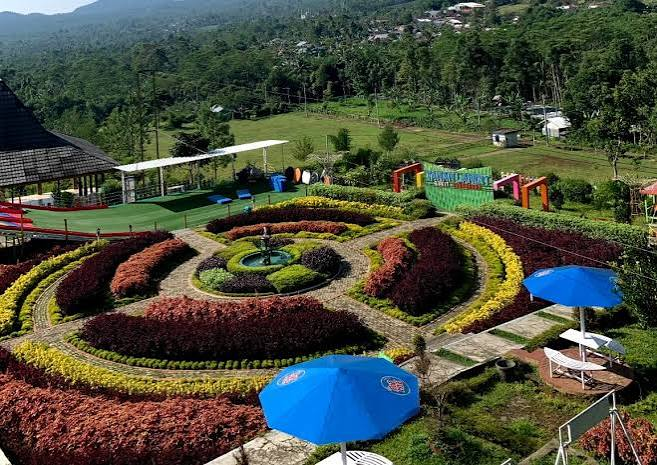
Jalur HikingBukit Tangkeban
Lokasi : Desa Nyalembeng, Kecamatan Pulosari, Kabupaten Pemalang, Jawa Tengah (Terletak di area lereng kaki Gunung Slamet).
Ciri Khas : Menyuguhkan pemandangan megah Gunung Slamet secara langsung, populer dengan wahana Taman Langit yang ikonik, serta memiliki Jembatan Kaca transparan di atas ketinggian.
Keunggulan : Menyuguhkan pemandangan megah Gunung Slamet secara langsung, populer dengan wahana Taman Langit yang ikonik, serta memiliki Jembatan Kaca transparan di atas ketinggian, hingga area glamping yang ramah pemuda dan keluarga.
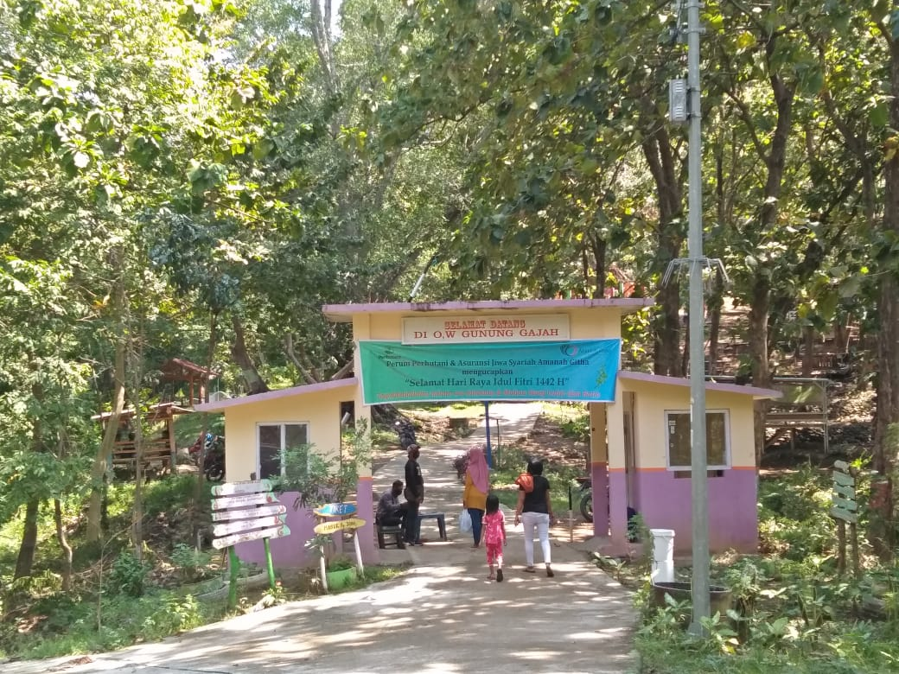
Gunung GajahGunung Gajah
Lokasi : Desa Gongseng, Kecamatan Randudongkal, Kabupaten Pemalang (Akses mudah jalan, wilayah Perhutani KPH Pemalang).
Ciri Khas : Bukit batu purba menjulang tinggi yang siluetnya menyerupai bentuk gajah raksasa sedang tidur, serta menjadi habitat alami yang terlindungi bagi ratusan ekor kera ekor panjang.
Keunggulan : Menawarkan petualangan trekking dan panjat tebing yang menantang adrenalin, menyuguhkan pemandangan bentangan hutan hijau yang menakjubkan dari puncak gardu pandang.
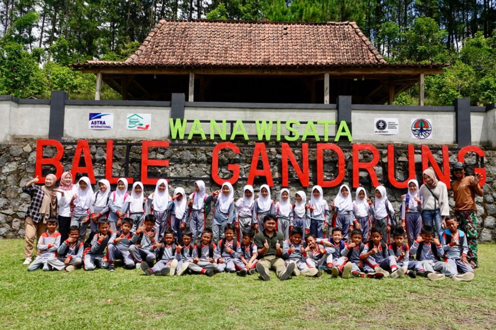
OutboundBale Gandrung
Lokasi : Desa Gambuhan, Kecamatan Pulosari, Kabupaten Pemalang (Berbatasan langsung dengan kawasan Bumijawa/Guci Tegal, wilayah Perhutani KPH Pemalang).
Ciri Khas : Berfungsi ganda sebagai Destinasi Wisata sekaligus Rest Area Alam strategis di pinggir jalan raya, menyuguhkan hamparan hutan pinus yang rindang, serta latar belakang megahnya Gunung Slamet.
Keunggulan : Tempat istirahat yang sejuk dan damai bagi pengendara luar kota, memiliki fasilitas outbound dan camping ground yang luas udara sejuk yang menenangkan, serta memiliki banyak spot foto estetik.
Mengapa Memilih Ekowisata Perhutani?
Wisata Alam
Destinasi yang terjaga keasliannya dan lestari.
Edukasi Hutan
Mengenal ekosistem hutan secara langsung.
Aman & Nyaman
Fasilitas yang dikelola secara profesional.
Dampak Lokal
Wisata Anda mendukung ekonomi masyarakat.
Manajemen Hutan Komprehensif & Berkelanjutan
Manajemen kawasan hutan secara komprehensif mulai dari perencanaan, perlindungan, inventarisasi, hingga pemeliharaan fungsi ekologis dan sosial.
Pelajari Lebih Lanjut Halaman Pengelolaan Hutan →